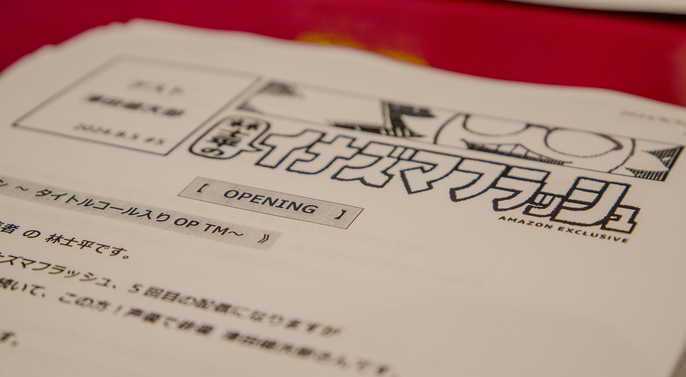

#03 野木亜紀子さん対談まとめ
- Update:
- 2024.12.29

対談まとめ レポート
- Update:
- 2024.12.29
このページでは、各ゲストと林士平さんの対談の内容を、トピックごとにまとめて掲載しています。全8回の対談終了後、二人が話してきた内容や話題に上がった作品を振り返りながら、トップランナーの脳内を覗き見しましょう！
今回はイナズマフラッシュ収録レポート特別編！
脚本家の野木亜紀子さんとお届けした、全8回をトピックごとに振り返っていきます。

- 出会いと関係性
漫画の林さんと映像の野木さん。エンタメ界のトップランナーとして活躍し続ける二人であり、どこかで交流があるのかなと思っていましたが、実は初対面となりました。
エピソード後半では、様々な共通の知り合いが居ることも判明。ここまで交わってこなかったことが不思議なほど、エンタメやニュースで盛り上がる対談となりました。
- 脚本家野木亜紀子の原点
野木さんが映像の世界に足を踏み入れたのは、日本映画学校（現日本映画大学）。
映画監督を目指して夢を追いかける毎日でしたが、ひょんなことからドキュメンタリーの制作会社に就職することに。映画業界に入ろうとすると、どうしても最初は安定した収入を得られず、実家を出たいという想いもあり、21歳からドキュメンタリー制作に従事していきます。
当時の大変だったエピソードなども交えつつ、制作会社では取材で様々な場所に行ったことが良い経験になったと野木さん。ニューヨーク・サンフランシスコなどアメリカはもちろん、ヨーロッパや香港への長期滞在など、一般的な20代では到底することの出来ない、数多くの体験。
書籍やインターネットでは得られない取材の数々が、現在の脚本や作品づくりに繋がっているのです。
しかし、時代は2000年代になり、日本は不景気に。テレビの予算や影響力が少しずつ低下し始めていきます。地方の美味しいご飯や旅館の紹介などバラエティを担当することが増え、いわゆるしっかりとした取材から作っていくドキュメンタリーが減っていく現状。
改めて自分のキャリアを見つめ直すタイミングで、土日にドラマを見続けるような日々を送っていたこともあり、ドラマの脚本というものを入口として目指す道へ。
派遣社員として仕事を続けつつ、脚本のネタを職場などで探しながら、空いた時間で自主勉強と執筆作業。フジテレビヤングシナリオ大賞へ応募し続けた野木さんは、6年目『さよならロビンソンクルーソー』にて第22回フジテレビヤングシナリオ大賞を受賞。脚本家としての道を歩み始めます。

- 野木亜紀子脚本作品とウラ話
いま一番注目を集める脚本家と言っても過言ではない野木さん。ここでは番組の中でウラ話を聞かせて頂いた作品について、幾つかピックアップして振り返っていきます。
・TBS系 金曜ドラマ『アンナチュラル』
2016年の『重版出来!』でメイン監督を務められていた土井裕泰さんが、打ち上げの際「TBSは野木さんにオリジナルを書かせるべきだ！」と推してくれたこと。
また、そのタイミングで、女性主人公の監察医ものというテーマで、原作湊かなえさん・脚本奥寺佐渡子さんのテレビドラマ『Nのために』で演出を担当していた塚原あゆ子さんと、プロデューサーの新井順子さんと、チームで一緒にやらないかとの提案を受けます。
『Nのために』が大好きだったという野木さんは快諾。こうして初めて野木さんが企画から作ったオリジナル作品が『アンナチュラル』なのです。
タイトルに関してのウラ話も。
ひと目見て分かりやすい説明のようなタイトルや、いわゆる「〜〜（にょろ）」が付いたサブタイトル有りのタイトルなどを求める人も居るなかで、『アンナチュラル』を通すために、新井順子プロデューサーは腹案として『解剖、ときどき恋』という、あえてあり得ないと思われる候補を準備。見事、『アンナチュラル』が採用される運びとなりました。
・映画『ラストマイル』
『ラストマイル』の企画の段階で、塚原あゆ子監督と話していたところ、荷物が爆発する話と唐突な提案が。野木さんいわく「あの人爆発とか血とか大好きなんですよ」とのことでしたが、時代はコロナ禍。ちょうどオンラインショッピングが一般化し、配送や物流に歪みが生まれてきたタイミングでした。
厳密に言えば物流問題を直接社会的に取り扱った話にはなりませんでしたが、働くとは何かを考えさせられる作品となり、幅広く多くの人に刺さる作品となりました。
“シェアード・ユニバース作品”である本作。『アンナチュラル』『MIU404』『ラストマイル』は同じ世界の話であり、『ラストマイル』には『アンナチュラル』『MIU404』の登場人物も出演しています。
実は立ち上げの際には、シェアード・ユニバースにすることは考えていなかったそう。『MIU404』にて機動捜査隊（通称：機捜）を扱うことが決まったタイミングで、地元警察役として新しいキャラクターを作るより『アンナチュラル』から西武蔵野署のキャラクターを連れてくれば良いのでは？という経緯から、2つの作品の世界、そして『ラストマイル』へ繋がる世界が生まれていったのです。
監督の塚原あゆ子さんは『第49回報知映画賞』にて監督賞を受賞。表彰式には野木さんがサプライズで登場されていました。『海に眠るダイヤモンド』でもタッグを組む二人。本編でも「結局人」と仰られていた野木さん、信頼と信用が素晴らしい作品づくりに直結していることがよく分かるお話でした。
・TBS系 日曜劇場『海に眠るダイヤモンド』
1955年からの石炭産業で躍進した長崎県・端島と、どこか閉塞感が漂う現代の東京を舞台とした本作。
近現代とはいえ、野木さん史上初めての時代物であり、時代考証という、作品内に登場する衣装や小道具、言葉遣いや作法などが、取り扱う時代に沿っているのか向き合う必要がありました。
端島の取材や時代への理解を進めるにあたり、１人では難しいと感じた野木さんは、『いだてん〜東京オリムピック噺〜』にて取材などを担当した渡辺直樹さんを紹介され、そこからおなじく『いだてん』繋がりで長崎県出身の林啓史さんと共に取材をおこなっていくことに。
実際に端島に住んでいたご高齢の方への取材も、地元長崎出身の林啓史さんが入ることで、かなり取材しやすくなったと野木さん。2人で激論を交わしながら、手を尽くして取材を進めていき、シナリオを作っていったそうです。

- 世界情勢とエンタメの関係性
二度目の収録日直前にあったのがアメリカ大統領選挙。共和党のドナルド・トランプ前大統領が、民主党のカマラ・ハリス副大統領を破り勝利し、4年ぶりに政権を獲得しました。
就任は2025年1月20日ですが、既に世界情勢に大きく影響を与えはじめています。それはエンタメやクリエイティブの世界でも同じ。
例えば「第三次世界大戦後の荒廃した世界」。SF作品などで頻繁に採用されてきた設定で、映画や小説など数え切れない作品があります。これを今やるとすると、物語というよりは、現実の延長線上になってしまい企画当初の意図から外れてしまう可能性があります。
また昨今の世界情勢の移り変わり、スピード感も問題に。特にコンテンツやエンタメが国境を超えて楽しまれるようになった現代では、昨日まで冗談として楽しまれていたことが、今日、世界の何処かで誰かを傷つけてしまう武器になってしまう可能性すらはらんでいるのです。
尾田栄一郎先生が住んでるから、日本にミサイル飛ばすのは止めておこう。そんなエンタメが平和に繋がる道を夢想しているという林さん。なにかのトリガーで一気に傾いてしまいそうな世界情勢だからこそ、エンタメがクリエイティブが少しでも抑止力になることを願うばかりです。
個人的には林さんが語られていた、図書館に入っていた漫画が手塚治虫先生の一部の作品と『はだしのゲン』しか無かったというお話にすごく共感しました。2000年代までは毎年のように制作されていた、終戦記念映画も最近では話題に上がらなくなっています。
クリエイティブや創作の力で、「戦争」というものに触れ理解しようとしてくれる人が現れる可能性もあると林さんの言葉。いま、語り継ぐ人が居なくなってきている「戦争」。二度と起こしてはいけない、絶対に避けるべきものであるという認識を後世に伝えていくためには、クリエイティブの力が必要なのかもしれません。

- 林さんが企画を野木さんに持ち込み…!?
原作モノはもちろん、様々な企画が持ち込まれている野木さん。今から順番待ちすると5年はかかるかもしれません。そんな野木さんですが、最近はシンプルに自分のやりたいことからやっていこう、というモチベーションになっているそう。
「林さん、原案考えてください」という豪華すぎるリクエストを頂きました。とはいえ、野木さんが「思わず書きたくなる、見たこと無い企画」という常人からすると高すぎるハードル。
早速会社のメンバーたちと企画出しをしたという林さん。野木さんのこれまで執筆してきた作品のジャンルやテーマを前に書き出し、野木さんが興味を持つような企画を考えていったとのこと。「企画を考える練習になるし楽しいじゃないですか！」と仰られていましたが、そのフットワークの軽さと実行力。
改めて林さんの凄みを感じたエピソードでした。考えることを楽しみ、企画で遊んでいる感覚なのでしょうか。私たちが思っているより、ずっと早く2人のコラボは実現するかもしれません。
今回は簡易的にですが、ゲスト脚本家の野木亜紀子さんでお届けした、全8回をトピックごとに振り返っていきました。
個人的に強く印象に残ったのは、皆さんにはお伝えできない、二人の収録合間での雑談でした。
二人とも「有名作品を多く手掛け、ヒット作を連発するトップランナー！」というイメージでしたが、裏側で話される理不尽すぎるエピソードや業界の厳しい現状を聞くと、お二人がどれだけ「闘い」を経てコンテンツを世界に届けているのか、思い知るお話がたくさんありました。
良いコンテンツ・面白いコンテンツを作る。シンプルなように聞こえますが、様々な関係者・ステークホルダーとの調整を経て、コントロールしていかなければ、面白いはずのコンテンツも形を変えてしまいます。
本編内でも何度も語られていますが、漫画家という職業はその調整から一番遠いクリエイターなのかもしれません。企画から脚本、カメラや照明、全体の監督まで一人で作り上げていく。そこに伴走しているのが編集者であり、林さんなのです。
今後も様々なクリエイターとの対談を通して少しずつ林さんの脳内を覗いていきたいと思います！
ぜひ番組とこのホームページでお楽しみください。